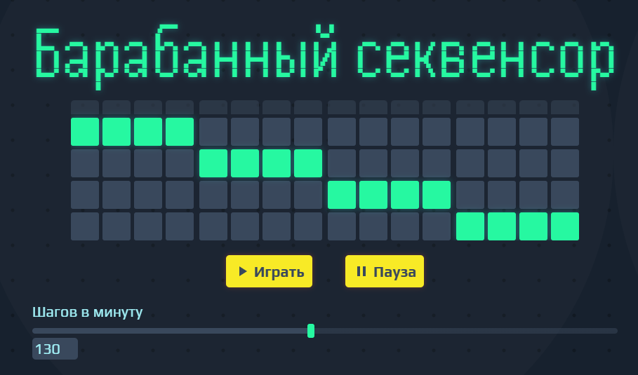
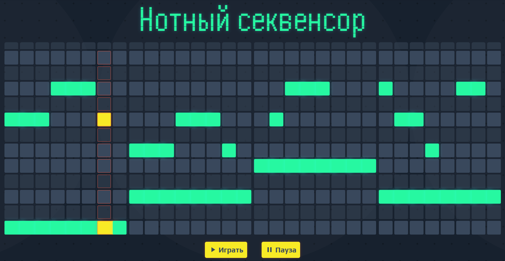
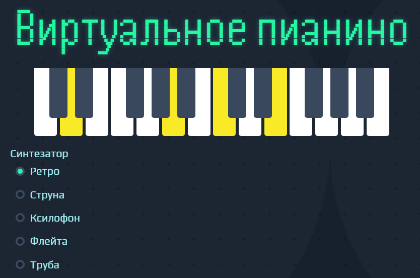

01
Барабанный секвенсор
Инструмент для создания простых ритмических паттернов с использованием четырёх барабанных звуков: бас-бочки, снейра, хай-хэта и ковбела. Позволяет расставлять удары на сетке и прослушивать результат в режиме реального времени.
 Попробовать02
Нотный секвенсор
Средство для пошагового сочинения мелодий. Ноты размещаются на временной сетке, а выбор инструмента и тональности помогает настроить звучание композиции без необходимости игры вживую.
 Попробовать03
Виртуальное пианино
Виртуальное пианино, доступное прямо в браузере. Поддерживает игру как с помощью клавиш клавиатуры, так и через сенсорный ввод, воспроизводя звуки различных синтезаторов.
 Попробовать